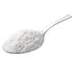
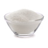
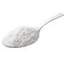
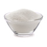
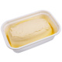
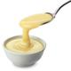
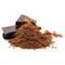

Receita de bolo de cenoura
Você adora um bolo macio e delicioso, mas acha que a cozinha não é o seu forte? Prepare-se para mudar de ideia! Esta receita de bolo de cenoura é a prova de que é possível criar uma sobremesa incrível sem complicação. Com ingredientes simples e um passo a passo fácil de seguir, você vai se surpreender com o resultado: um bolo fofinho e úmido, perfeito para o café da tarde ou para qualquer momento especial. Vamos juntos transformar a cenoura em um verdadeiro banquete!
50min
15 fatias
Econômico
Ingredientes
 



- 2 cenouras médias
- 3 ovos
- 1/2 xícara de óleo
- 1 colher (chá) de fermento em pó
- 2 xícaras de trigo
- 1 xícara de açúcar
Cobertura
  - 1 colher de margarina
- 1/2 lata de leite condensado
- 3 colheres de chocolate em pó
- 1 xícara de leite
Passo a passo
- Coloque no liquidificador a cenoura descascada e picada, os ovos inteiros e o azeite, bata até formar um creme.
- Em uma vasilha separada (pode ser a bacia da batedeira) coloque o trigo e o açúcar.
- Junte o creme do liquidificador e bata por alguns minutos.
- Por último, coloque o fermento em pó e mexa bem.
- Coloque todos os ingredientes em uma panela e mexa até engrossar.